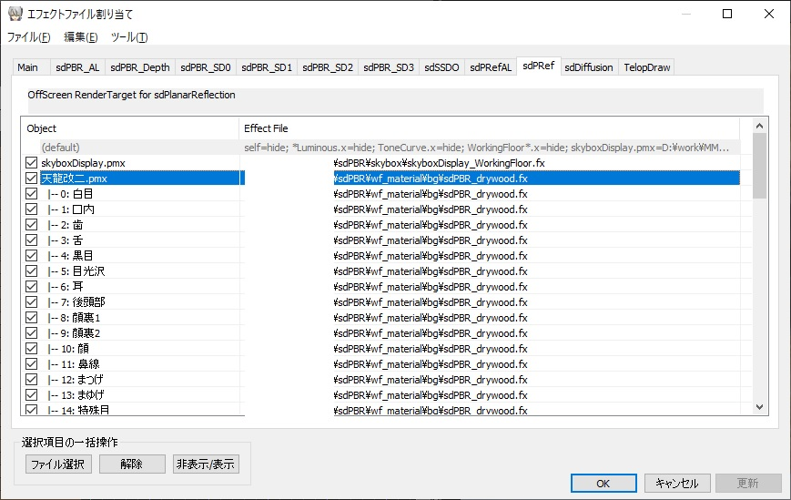
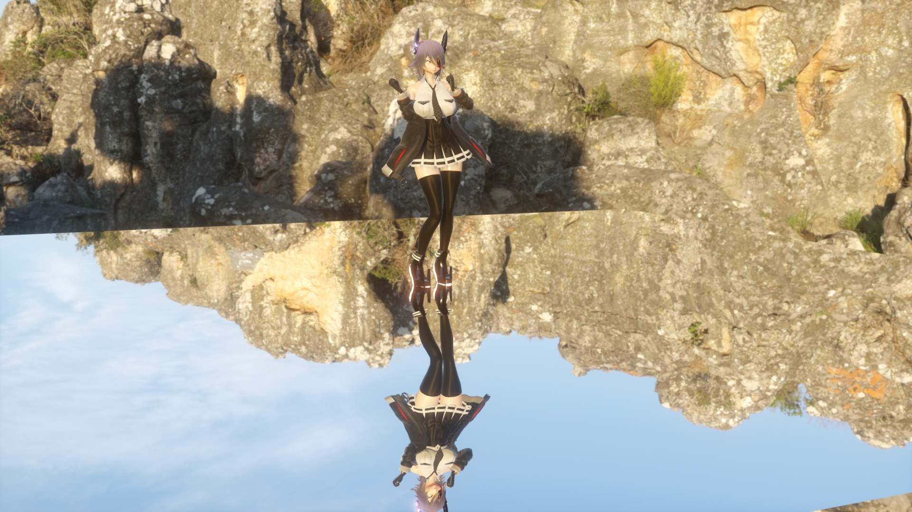
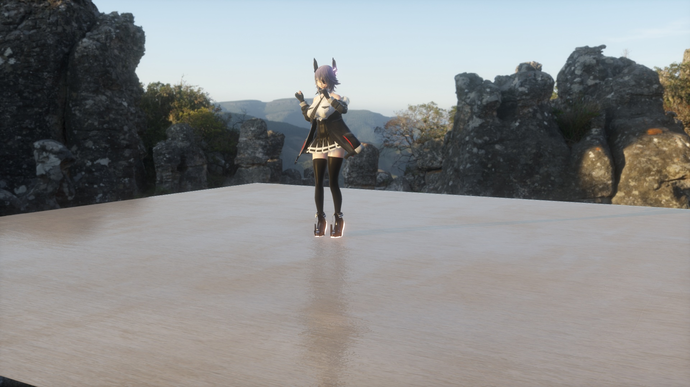

reflected!
Based on Harigane-P's masterpiece, WorkingFloor, this effect creates a relatively accurate reflection while limiting the reflection to a nearly flat surface. It is almost twice as heavy because it works by drawing and pasting a separate mirror image, but it significantly reduces the strange noise and artifacts that come with the SSR, and it also properly draws areas that are in the camera's blind spots.
When used in dance videos or PVs, objects appearing on the floor makes it seem like the floor is doing a good job, and it's effective for a very catchy expression, so many MMD artists find this effect useful. Oh, and be careful not to violate the terms and conditions of the model, motion, etc.
Please be aware that if you try to use it properly, it's tedious, quite heavy, and has many limitations. Use it only if you are willing to accept these drawbacks. The visual effect is well worth the effort, so as long as the graphics card is reasonably powerful, I'm sure you'll be pleased.
This effect works by reading G-Buffer, which passes information from sdPBR to the additional light. So if the additional light is disabled, it will not work properly. Make sure the Disable deferred lighting option is unchecked in the sdPBRConfig.exe.
First, let's set up sdPBR so that it has loaded some model (read the Quick Start Guide or this tutorial). After that, load posteffect/PlanarReflection/sdPlanarReflection.pmx into MMD. The current implementation is not a post effect, but for some reason it is placed under the posteffect folder.
If you have already loaded the background model, raise the Y coordinate to, say, 0.05 to make it float and prevent it from getting stuck in the floor. In the original WorkingFloor, the floating process was also built into the shader, which was very convenient, but in this effect, that process is intentionally removed.
The display order should be set as far back as possible compared to other objects, especially the background model. However, it should be in front of the things that are easily overwritten, such as those achieved with shaders like Paripibeam.
Now, if everything is set it up correctly, it should look something like this:
reflected!
Tenryu-chan and the top of the skybox will look like it's reflected in a mirror.
However, when you look closely, Tenryu-chan's texture is a little different in person than in the mirror. Materials that are a bit glossy, such as knee-high socks, have no shine. Let me explain how to make them match. (Even after matching them, they won’t be exactly the same.)

sdPRef tab
sdPlanarReflection renders the mirrored output of the shader assigned to each object in the sdPRef tab of the MMEffect dialog, and applies it to the floor polygon included in sdPlanarReflection.pmx. The material files stored in the wf_material folder will be used for rendering mirrored objects.
So let's open the sdPRef tab of the MMEffect dialog, as shown in the image above. For each object that has sdPBR materials applied, there's a corresponding material in wf_material, so apply the material with the same name. For your own materials, you will need to convert them to wf_material yourself. The process is very easy, and will be explained later.

More Tenryu-chan
When I assigned wf_material in the sdPRef tab, Tenryu-chan in the mirror became glossy. MMD models are often made from dozens of materials, so it can be tedious to re-assign each one by hand. The emd file used in File(F) - Open/Save by model in the MMEffect dialog can be edited in Notepad, so it is easier to find & replace the fx file path of the material. Well, you don't need to match them perfectly. It'll be fine.
The wf_ is obviously named in honor of WorkingFloor. In fact, you can (probably) use the same procedure to create an sdPBR-style reflection on the original WorkingFloor by Harigane-P. What sets sdPlanarReflection apart from the original WorkingFloor is that you can change the way materials are reflected by reading the contents of sdPBR's G-Buffer.
sdPlanarReflection adds two tabs to the MMEffect dialog: sdPRef and sdPRefAL. The sdPRefAL tab is used to set up AutoLuminous, created by Soboro, to reflect the luminous materials in the reflection. It can be used to control the glare of luminous materials using AutoLuminous.
There is a morph called ConstReflectance in sdPlanarReflection.pmx, so let's increase it. This will calculate the reflectance based on the material assigned to the object directly below the mirror surface. If you assign a material to the floor of the background model, the reflection will match that material.
In addition, roughnessScale will kind of affect the direction of reflection based on the base normal, so the unevenness of the base will be visible in the reflection. Also, normalScale will kind of blur the reflection based on the roughness of the underlying material. The reason I say "kind of" is because these effects are not very accurate.
By using the morphs described above, for example, by assigning materials to wooden boards, you can create a nice, soft reflection like this. There are no wooden board materials included, so if you want one, you can create your own using MaterialImporter.

Reflected on a wooden board
As for the materials included with sdPBR, they are all converted and placed in the wf_material folder. For your own materials, copy them to the same folder (or any folder with the same directory level as sdPBR.pmx), renaming them to something easy to identify, and then
#include "../../shader/sdPBRMaterialHead.fxsub"
add the following line above this line:
#define IN_THE_MIRROR
This will create a .fx file that will function as a shader for drawing mirror images when specified in sdPRef. For a concrete example, take a look at the .fx file in the wf_material folder.
The skybox will be reflected automatically, but stage settings such as Paripibeam will not be reflected by default.
There are fx files like stageSet/beam/_map_beam_WorkingFloor.fx that end with _WorkingFloor.fx, so assign them to the corresponding effect, such as beam.pmx, in the sdPRef tab.
As a general rule, images drawn based on information in the screen space, such as depth information, are not reflected, so the following limitations apply:
There are a lot of limitations, but trying to mirror it perfectly correctly requires exactly the same resources as drawing it from the front, so not only does it double the resources required, but it also simply doubles the number of tabs in the MMEffect, which I think is very inconvenient. And since the other side of the mirror is rarely seen, I decided that approximate symmetry is sufficient. Please make good use of it.
{kind=link}
{kind=link}
{kind=link}